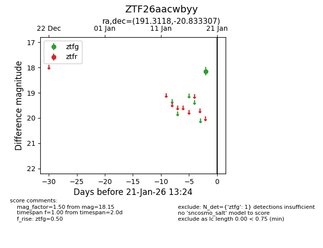
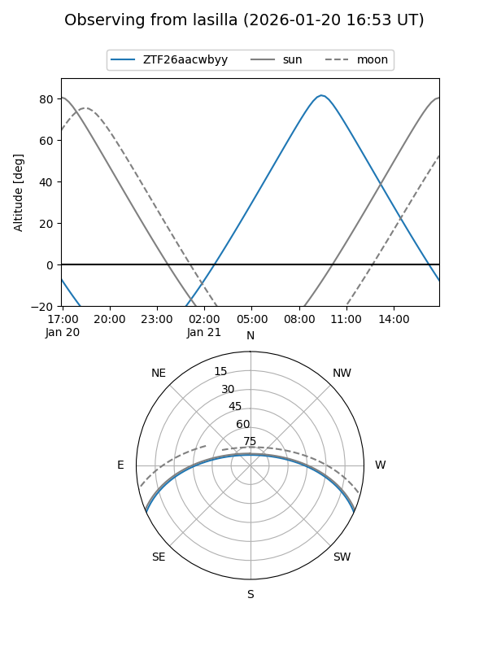
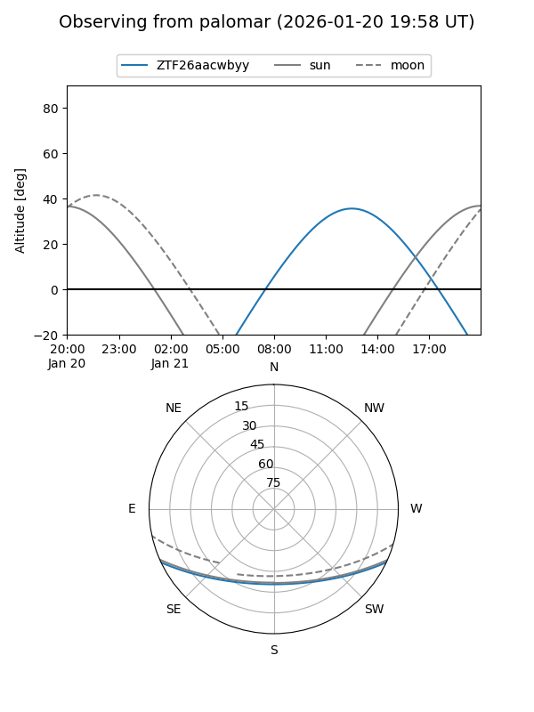

ZTF26aacwbyy
Target ZTF26aacwbyy at 2026-01-19 13:21
Aliases and brokers:
FINK: link
Lasair: link
ALeRCE: link
alt names
ZTF26aacwbyy (ztf,fink_ztf)
Coordinates:
equatorial (ra, dec) = 191.3118,-20.83331
equatorial (HMS+DMS) = 12:45:14.82,-20:49:59.90
galactic (l, b) = (300.9848,+42.01503)
Flags:
Photometry:
last ztfg=18.15
1 ztfg detections
Lightcurve

Visibility


Additional plots